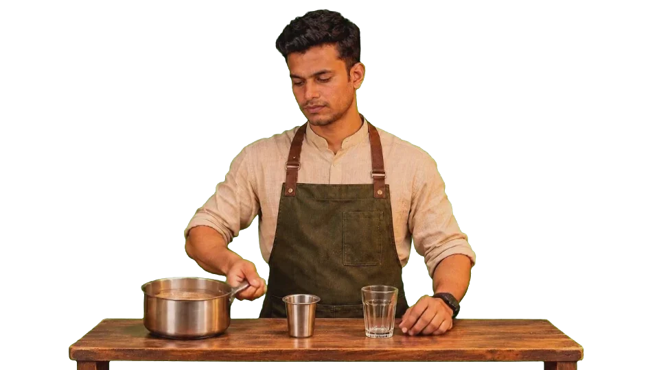
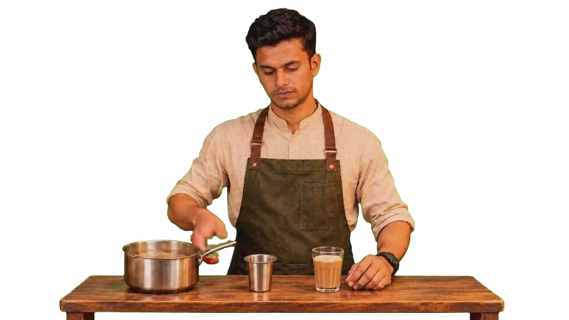

Chaya Kada
Chaya, made fresh.
Scroll to see how Kerala chai is pulled.
Chaya adikkal.
A long pour gives the chai its froth.
Into the glass.
Watch the chai fill the glass.


Chaya Kada
Scroll to see how Kerala chai is pulled.
A long pour gives the chai its froth.
Watch the chai fill the glass.

